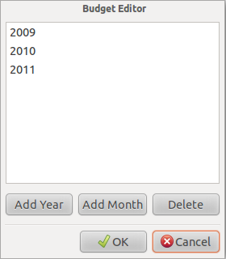
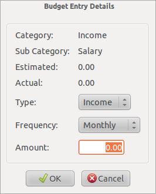
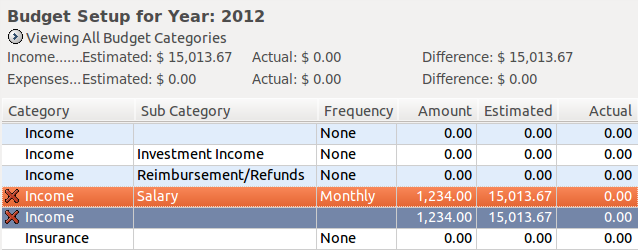

MMEX allows for the setting up of a budget for a Year and/or Month.
This would allow you to compare how you did versus your budget.
Budgets can be displayed in Calendar Years or Financial Years.
Use the Options Dialog to set the start of the Financial Year, and any permanent settings as required.
The View→Budgets: As Financial Years can also be used to switch between the 2 views
To set up a budget right click on the 'Budgeting' tree node and add a budget month or year.
Once a year has been added, select the year to display the Budget Setup.
Each category can then be edited by double clicking the selected category.
This is done for all subsequent categories.
This becomes the budget for that year. Subsequent months and/or years can then be derived from that year.
Category Summary Totals are displayed for each main category.
When setting up a budget, the Budget Summary Totals can be turned off by activating the Menu Item:
View→Budget Setup: Without Summaries
Using the reports under 'Budgeting', it is now possible to compare how you spent the money versus your actual budget.